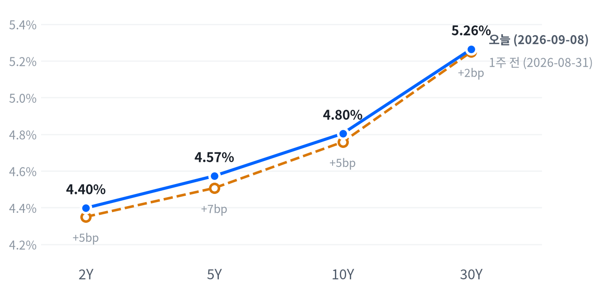

노동절 연휴를 지나 맞은 첫 거래일, 노바티스의 콜레스테롤 신약 임상 실패가 헬스케어 업종 전반을 끌어내리고 중동발 공급 우려로 유가가 100달러에 바짝 다가서면서 다우가 3대 지수 중 가장 크게 밀렸습니다. 엔화는 일본은행의 금리 인상 베팅이 강화되며 급등했습니다.
루멘텀·코히런트 등 광통신주와 GE 버노바·버티브 등 전력 인프라주는 개별 재료로 지수와 반대로 급등했습니다. 포트폴리오는 채권 숏 바이어스·달러 소폭 매도를 유지하되, AI 인프라는 오늘 중립에서 비중확대로 올립니다.
노동절 연휴 이후 첫 거래일, 노바티스의 콜레스테롤 저하제 임상 3상 실패가 헬스케어 업종을 끌어내리고(XLV -2.52%) 중동발 공급 우려로 WTI가 3.14% 급등하며 100달러에 다가섰습니다. 다우는 이 두 재료를 가장 크게 반영해 1.18% 밀렸습니다.
헬스케어 급락은 개별 업종 악재라 지수 전체의 방향을 정하지는 못했지만, 유가 급등은 물가 재가속 우려를 자극해 국채금리 전 구간을 밀어올리는 경로로 이어졌습니다. 동시에 광통신·전력 인프라주는 애널리스트 커버리지 개시라는 별도 재료로 지수와 반대로 뛰어, 하루 안에서도 자산별로 완전히 다른 이야기가 겹쳤습니다.
오늘은 AI 인프라 비중을 2~6주 시계로 중립에서 비중확대로 올리고 나머지 포지션은 다음 세션까지 그대로 유지합니다. AI 인프라 바스켓의 5일 초과수익이 트리거를 충족해 중립에서 OW로 옮기는 것 외에는 채권 숏 바이어스·달러 소폭 매도 등 기존 구도를 그대로 가져갑니다.
이 판단은 다음 주 발표될 8월 CPI가 물가 재가속을 확인시키거나, AI 인프라 5일 초과수익이 다시 0%포인트 아래로 반전하면 무효화됩니다.
글로벌 흐름. 아시아는 미국과 엇갈렸습니다 — 노동절 연휴 전 마지막 거래일이던 9월7일 아시아 3대 지수는 평균 0.42% 올랐지만 오늘 미국 지수는 하락해 방향이 갈렸습니다. 닛케이(+2.12%)·항셍(-0.93%)·상하이종합(+0.07%)이 서로 다른 방향으로 움직여 지역 안에서도 갈렸습니다. 유럽은 보합권(평균 -0.02%)에 머물렀네요. DAX·FTSE100·유로스톡스50이 서로 엇갈려 유럽 안에서도 방향이 갈렸습니다.
| 지수 | 종가 | 등락률 | 기준일 |
|---|---|---|---|
| 닛케이225 | 66,399.84 | +2.12% | 9/7 |
| 항셍 | 25,413.12 | -0.93% | 9/7 |
| 상하이종합 | 3,932.70 | +0.07% | 9/7 |
| DAX | 26,006.53 | -0.15% | 9/7 |
| FTSE100 | 10,822.10 | -0.08% | 9/7 |
| 유로스톡스50 | 6,403.99 | +0.17% | 9/7 |
| VIX | 15.72 | +2.75% | 9/8 |
야간 선물. S&P500 선물(ES)은 자정 직후 새벽 0시30분(ET) 7,726에서 고점을 찍은 뒤 미끄러져 새벽 4시 7,688까지 밀렸습니다. 야간 변동폭은 0.50%였네요. 나스닥 선물(NQ)의 변동폭은 0.97%로 더 컸습니다. 현물 갭은 S&P500 -0.01%, 나스닥 +0.09%, 러셀2000 -0.20%로 사실상 보합 출발이었습니다.
마감 위치. 참여도는 고르게 내림이었습니다 — 동일가중과 시총가중 수익률의 차이(-0.49%포인트)가 시총가중 지수 자체의 하락폭(-0.55%)과 비슷해, 몇몇 대형주가 아니라 시장 전반이 고르게 눌린 하루였습니다. S&P500과 러셀2000은 장중 고저 대비 종가 위치가 각각 14·9로 저점권 마감했고, 나스닥은 42로 중단에 머물렀습니다. 이 경계는 최근 2,253거래일 이력에서 다시 잰 값으로, 상위 84.7 이상을 고점권, 하위 25.0 이하를 저점권으로 삼는군요. 대형·소형을 가리지 않고 저점권에 가깝게 마감한 것은 하루 종일 낙폭을 만회할 힘이 없었다는 뜻이고, 나스닥만 중단에 머문 것은 광통신·전력 인프라주 급등이 그나마 낙폭을 상쇄해줬기 때문입니다.
무엇이 움직였나. 이날은 두 갈래 재료가 동시에 지수를 흔들었습니다. 헬스케어는 노바티스의 임상 실패 소식이 장중 내내 반영되며 하루 종일 눌렸습니다. 유가는 새벽 시간대에 공격 소식이 가장 크게 반영된 뒤 낮 한때 되돌림을 거쳐 다시 고점권으로 마감했습니다. 국채금리도 전 구간에서 올라 유가발 물가 우려와 맞물려 주가 하락 전환을 거들었네요. 시간외 거래에서 지수 관련 새로운 재료는 확인되지 않았습니다.
변동성 지수 VIX는 15.72로 하루 +2.75% 올랐지만 절대 수준 자체는 여전히 낮은 구간입니다. 지수가 고르게 눌렸는데도 VIX가 크게 뛰지 않았다는 것은, 오늘 하락을 시장이 "위험자산을 전면적으로 던지는 신호"보다는 "업종·상품별 개별 재료가 겹친 조정"으로 받아들였다는 뜻으로 볼 수 있습니다.
S&P500은 7,674로 마감해 최근 2년(504거래일) 가운데 이보다 높았던 날이 20일뿐인 자리를 지키고 있습니다. 나스닥(22일뿐)과 러셀2000(42일뿐)도 비슷하게 최고치 구간에 머물러 있고, 변동성 지수 VIX는 15.72로 낮은 쪽 22% 안에 있습니다. 오늘 하락폭 자체는 S&P500 기준 평소 하루 움직임의 0.75배로 보통 수준이라 자리를 흔들 정도는 아니었습니다.
장중으로 보면 나스닥은 개장 직후 고점을 찍은 뒤 미끄러져 오전 10시 저점(26,342)까지 밀렸습니다(시가 대비 -0.71%). 이후 낙폭 일부를 되돌리며 장중 마지막 봉 기준 26,423까지 되돌렸습니다(공식 종가는 26,421).
S&P500도 비슷한 흐름으로 개장 직후 고점을 찍은 뒤 오후 3시30분 저점(7,667)까지 밀리며 장 후반까지 낙폭을 키웠습니다(시가 대비 -0.66%). 러셀2000은 오후 1시30분 장중 고점(2,975, 시가 대비 +0.20%)까지 반등하기도 했습니다. 하지만 결국 오후 3시30분 저점(2,959) 부근에서 마감해, 여섯 지수 중 유일하게 반등을 시도했다가 되밀린 지수였습니다.
S&P500의 오늘 하락(-0.58%)은 대부분 헬스케어와 금융 두 업종에서 나왔습니다. 헬스케어의 지수 기여도는 -0.23%포인트로 가장 컸고, 금융(-0.15%포인트)·임의소비재(-0.10%포인트)·커뮤니케이션서비스(-0.07%포인트)가 뒤를 이었습니다. 반대로 기술은 +0.11%포인트로 유일하게 뚜렷한 플러스 기여였네요. 소재·부동산을 포함해 이 아홉 섹터로 설명되지 않는 몫은 -0.15%포인트로 크지 않습니다.
앞서 마감 위치에서 봤듯 오늘은 대형·소형을 가리지 않고 고르게 눌린 하루였습니다. 이는 특정 대형주 몇 개의 문제가 아니라 헬스케어·금융처럼 업종 전반에 걸친 재료가 시장을 눌렀다는 뜻입니다. 나스닥만 중단 마감에 그친 것도 광통신·전력 인프라주라는 예외적 강세가 지수 하나를 떠받쳤을 뿐이라는 해석이 자연스럽습니다.
스타일 사이에서는 방향이 거의 갈리지 않았습니다. S&P500 그로스(-0.52%)와 밸류(-0.58%)의 하락폭 차이가 크지 않아, 오늘 하락은 특정 스타일에 쏠린 것이 아니라 업종 전반에 걸친 조정이었습니다. 다우존스가 3대 지수 중 가장 크게(-1.18%) 밀린 것은 가격가중지수 특성상 헬스케어 대형주의 급락이 그대로 반영된 결과이고, 시가총액가중 지수인 S&P500·나스닥은 상대적으로 덜 흔들렸습니다.
| 지수 | 종가 | 등락률 |
|---|---|---|
| 나스닥종합 | 26,421.41 | -0.32% |
| 러셀2000 | 2,960.20 | -0.52% |
| S&P500 그로스 | 139.82 | -0.52% |
| S&P500 밸류 | 235.42 | -0.58% |
| S&P500 | 7,673.52 | -0.58% |
| 다우존스 | 52,786.07 | -1.18% |
| 섹터 | 종가 | 등락률 |
|---|---|---|
| 에너지 | 64.77 | +1.11% |
| 유틸리티 | 43.45 | +0.86% |
| 기술 | 187.87 | +0.32% |
| 부동산 | 43.90 | -0.07% |
| 커뮤니케이션서비스 | 111.52 | -0.46% |
| 산업재 | 174.42 | -0.48% |
| 필수소비재 | 84.02 | -0.66% |
| 임의소비재 | 113.99 | -0.80% |
| 소재 | 51.94 | -0.95% |
| 금융 | 57.30 | -1.38% |
| 헬스케어 | 167.13 | -2.52% |
10년물은 4.804%로 최근 2년(504거래일)을 통틀어 가장 높은 자리에 있습니다. 30년물은 5.264%로 이보다 높았던 날이 이레(7일)뿐인 자리입니다. 오늘 상승폭은 10년물이 평소 하루 움직임의 0.55배, 30년물은 0.49배로 그리 크지 않았습니다.
| 만기 | 종가 | 전일比 | 1주 전 | 주간 변화 |
|---|---|---|---|---|
| 2Y | 4.398% | +1.9bp | 4.350% | +4.8bp |
| 5Y | 4.573% | +2.3bp | 4.507% | +6.6bp |
| 10Y | 4.804% | +2.0bp | 4.758% | +4.6bp |
| 30Y | 5.264% | +1.8bp | 5.249% | +1.5bp |

오늘 하루는 전 만기가 1.8~2.3bp 안에서 비슷한 폭으로 올라 사실상 평행 이동에 가까웠습니다. 1주일 단위로 보면 이야기가 갈리는군요. 5년물이 가장 크게 오르고 2년물·10년물이 뒤를 이었는데, 30년물만 가장 덜 올랐습니다. 그 결과 2s10s는 거의 그대로였던 반면, 5s30s는 좁혀지는 약세 플래트닝이 나타났습니다.
전 구간 금리가 오른 한 주였다는 점에서 이 플래트닝은 약세를 바탕에 깔고 있습니다. 30년물만 유독 덜 오른 것은, 장기물에 이미 실려 있던 되돌림 압력이 이번 주의 새로운 상승 재료(유가발 물가 우려)를 상당 부분 흡수했다는 뜻으로 볼 수 있습니다.
명목금리를 실질금리와 기대인플레로 나눠 보면, 10년물의 하루 변화(+1bp)는 9월4일 기준으로 실질금리(+1bp)가 전부 설명하고 기대인플레(0bp)는 거의 움직이지 않아 "유의미한 변화 없음"으로 분류됩니다. 5년물은 같은 날 +2bp가 전부 실질금리 상승분이었습니다.
5거래일로 넓히면 그림이 바뀝니다. 10년물은 상승분 대부분이 기대인플레 몫이고, 5년물은 기대인플레가 실질금리 하락분을 웃돌 만큼 더 크게 올랐습니다. 먼 미래 구간만 떼어 보는 5년 뒤 5년 선도금리(가까운 미래의 잡음을 걷어내고 몇 해 뒤부터 그 뒤 몇 해까지만 보는 값)는 명목 5.02%로 9월4일 기준 하루 변화가 없었습니다.
이번 주 기대인플레가 실질금리보다 더 크게 움직인 흐름은 이번 주 내내 이어진 유가 급등(WTI 20일 수익률 기준 큰 폭 상승)과 방향이 맞습니다. 다만 5년 뒤 5년 선도금리에서 역산되는 기대인플레(2.33%)는 눈에 띄는 동요 없이 앵커 수준을 유지하고 있어, 오늘 유가 급등이 장기 인플레이션 기대 자체를 흔들었다고 보기는 이릅니다. 10년 기간프리미엄(만기가 길수록 더 얹어 받는 값)은 9월4일 기준 0.89%로 하루 +0.8bp, 주간 +1.4bp 올라 완만한 상승세를 이어갔습니다.
신용시장은 9월7일 기준 하이일드 스프레드 2.68%(주간 +5bp), 투자등급 스프레드 0.81%(주간 +1bp)로 방향은 소폭 확대지만 절대 수준 자체는 여전히 낮아 위험선호가 급격히 무너진 흔적은 없습니다. 3개월 T-bill(3.77%, 9월4일 기준)과 SOFR(3.65%, 9월4일 기준)도 큰 변화가 없어 이번 상승은 국채 커브 안에서 소화되고 있습니다.
채권 포지션은 만기가 짧은 채권 비중을 상대적으로 늘리고 장기채 신규 편입은 자제하는 접근을 이어갑니다. 30년물이 근 20여 년래 최고치 부근을 벗어나지 못하는 한 장기물을 서둘러 늘일 이유가 없고, 신용 스프레드가 조용한 지금은 듀레이션 위험만 따로 떼어 관리하기에 나쁘지 않은 구간입니다.
달러지수(DXY)는 98.836으로 최근 2년의 한가운데쯤에 머물러 있습니다. 달러/엔(153.855엔)도 비슷하게 2년 흐름의 중간쯤입니다. 반면 달러/원(1,344원)은 이보다 낮았던 날이 열하루뿐인 극단적으로 강한 구간에 있어, 같은 달러 상대 통화라도 자리가 완전히 다릅니다.
| 페어 | 종가 | 등락률 |
|---|---|---|
| 달러지수(DXY) | 98.836 | -0.33% |
| 달러/원 | 1,343.57 | -0.11% |
| 달러/엔 | 153.855 | -1.50% |
| 유로/달러 | 1.1628 | +0.12% |
엔화 급등은 금리차 좁혀짐이 만든 것으로 보입니다. 일본은행이 다음 주 25bp 금리 인상을 단행할 것이라는 베팅이 강화되며 인상 확률이 한 달 전 52%에서 97%로 급등했습니다. 미국과 일본의 정책금리 차이가 좁혀질 것이라는 기대가 엔화를 G10 통화 중 최고 성과로 밀어올렸네요. 달러지수 자체는 -0.33%로 완만하게 내렸을 뿐이라, 이는 광범위한 달러 약세가 아니라 엔화에 집중된 개별 통화 재료입니다.
장중으로는 달러/엔이 새벽 3시(ET) 저점 152.881엔까지 밀렸다가(시가 대비 -0.82%) 낮 12시 고점 154.423엔까지 되돌리는 등 등락이 컸고, 장중 마지막 봉 값은 153.707엔이었습니다(공식 종가는 153.855엔). 오늘 하루 움직임은 평소 하루 폭의 2.94배에 달해 원자재를 포함한 오늘 주요 자산 중 가장 큰 폭이었습니다.
달러/원은 -0.11%로 상대적으로 완만했는데, 이는 원화가 이미 2년 이력 중 가장 강한 편에 속하는 구간을 지키고 있어 추가로 크게 흔들릴 여지가 적었기 때문으로 보입니다. 유로/달러는 +0.12%로 소폭 올라 유로존 통화도 달러 대비 강세를 보였습니다.
주식과 달러의 상관관계는 최근 60거래일 기준 반대로 움직이는 정도가 느슨한 수준(직전 60거래일보다 약해짐)이라, 오늘처럼 주가가 밀려도 달러가 일괄적으로 강해지는 그림은 더는 자동으로 성립하지 않습니다. 실제로 오늘은 주가와 달러지수가 함께 내렸습니다.
WTI는 94.35달러로 최근 2년 가운데 이보다 높았던 날이 43일뿐인 자리까지 올라왔습니다. 금은 4,397달러로 높은 쪽 25% 안에 있습니다. 오늘 금은 평소 하루 움직임의 0.48배에 그쳐 조용했던 반면, WTI는 0.96배로 거의 평소 하루 폭에 근접했습니다.
| 품목 | 종가 | 등락률 |
|---|---|---|
| WTI | 94.35달러 | +3.14% |
| Brent | 99.39달러 | +3.23% |
| 천연가스 | 2.898달러 | -2.59% |
| 금 | 4,396.70달러 | -0.75% |
WTI 급등은 순수하게 공급 쪽 재료입니다. 이란의 지원을 받는 후티 반군이 사우디 에너지 시설을 공격했다는 소식과 이란-미국 간 상호 공습이 겹치며 중동발 공급 우려가 재부각됐습니다. 이란이 오만과 호르무즈 해협 관리 협정을 마무리 짓고 있다는 보도도 통제력 우려를 키웠네요. 골드만삭스는 12월 인도분 브렌트·WTI 전망치를 각각 85달러·80달러로 상향했습니다.
장중으로는 시가 92.89달러에서 새벽 4시30분 고점 94.73달러까지 뛰었습니다. 공격 뉴스가 처음 반영된 구간으로 추정되는군요. 이후 낮 1시 저점 91.82달러로 되돌린 뒤 다시 94.35달러로 고점권 마감했습니다. WTI와 Brent의 스프레드는 5.04달러로 벌어져, 중동 지정학 리스크가 국제 벤치마크인 브렌트에 조금 더 무겁게 반영되고 있다는 뜻입니다.
오늘 시장 전체를 관통한 공통 움직임에서 가장 크게 걸린 자산군은 여전히 주식(41.6%)이었지만, 그다음은 금리(19.1%)로, 직전 60거래일 구간의 달러에서 바뀌었습니다. 이 공통 움직임에 함께 붙어 다니는 자산군도 금리에서 원자재로 옮겨 갔습니다(로딩 0.27). 유가가 이번 주 내내 지정학 재료로 크게 움직인 것이 이 변화의 배경으로 보입니다.
금은 정반대로 움직였습니다. 새벽 자정 고점 4,489달러에서 저녁 4시30분 저점 4,381달러까지 꾸준히 밀리며 마감 직전 저점권에 머물렀습니다. 금과 금리의 상관관계는 최근 60거래일 기준 거의 무관한 수준이네요. 오늘 실질금리가 5년물 기준 소폭(+2bp) 오른 것만으로 금 약세를 설명하기는 어렵습니다. 달러지수가 오히려 내렸는데도 금이 함께 밀린 것은, 매파적 연준 기대와 위험선호 요인이 통화 요인보다 더 크게 작용했다는 뜻으로 볼 수 있습니다.
천연가스는 -2.59%로 원자재 네 종목 중 가장 큰 폭으로 움직였지만 별도의 촉발 재료는 확인되지 않았습니다. 오늘 하루만 보면 원자재 안에서도 유가와 금이 완전히 다른 이야기(공급 충격 대 매파적 금리 기대)를 각자 겪은 셈입니다.
지금 미국 경제는 연착륙 국면을 여드레째 유지하고 있습니다. 성장 쪽은 어느 방향으로도 뚜렷하게 기울지 않은 채 둔화 경계 안쪽에 머물러 있고 물가 쪽도 둔화 판정을 이어갑니다. 성장축은 -0.38, 물가축은 -0.391로 각각 둔화 경계인 -0.33보다 더 아래입니다.
새로 나온 헤드라인 경제지표가 없어 네 축 모두 어제와 같은 관측치로 계산되고, 국면을 움직일 근거가 없습니다. 4축 방향도 고용(보합)·생산·활동(악화)·소비(악화)·물가(둔화) 모두 어제와 동일합니다.
고용은 보합을 유지합니다. 오늘 새 발표가 없어 어제 판정을 그대로 이어받고, 일곱 지표 중 다섯이 개선 방향이지만 정도가 미미해 축 전체는 방향을 정하지 못한 상태입니다. 고용축 +0.068
| 지표 | Actual | Forecast | Previous | 발표일 | 추세 | 판정 |
|---|---|---|---|---|---|---|
| 비농업 고용(천 명) | +162.0 | +53.0(다우존스) | +21.0 | 9/4(8월분) | 악화 | 상회▲ |
| 실업률(%) | 4.1 | 4.1 | 4.1 | 9/4(8월분) | 개선 | 부합= |
| 시간당임금 전월비(%) | 0.27 | — | 0.16 | 9/4(8월분) | 개선 | — |
| 구인건수·JOLTS(천 건) | 7,271.0 | 7,300.0 | 7,182.0 | 기준월 2026-07 | 개선 | 하회▼ |
| 신규 실업수당 청구(건) | 206,000 | — | 204,000 | 기준주 8/29 | 악화 | — |
| 신규 청구 4주 평균(건) | 207,250 | — | 205,750 | 기준주 8/29 | 보합 | — |
| 계속 실업수당 청구(건) | 1,779,000 | — | 1,771,000 | 기준주 8/22 | 개선 | — |
생산·활동은 악화 쪽을 유지합니다. 새 발표가 없어 다섯 개 지표 중 넷이 나빠지는 방향이던 어제 판정이 그대로 이어집니다. 생산·활동축 -0.361
| 지표 | Actual | Forecast | Previous | 발표일 | 추세 |
|---|---|---|---|---|---|
| 산업생산 전월비(%) | 0.20 | — | 0.27 | 기준월 2026-07 | 악화 |
| 내구재 주문 전월비(%) | 1.08 | — | 0.58 | 기준월 2026-07 | 악화 |
| 신규주택 판매(천 건) | 607.0 | — | 678.0 | 기준월 2026-07 | 보합 |
| 기존주택 판매(건) | 4,060,000 | — | 4,130,000 | 기준월 2026-07 | 개선 |
| 실질GDP 성장률(연율,%) | 1.5 | — | 2.1 | 기준분기 2026 Q2 | 보합 |
소비는 악화 판정을 유지합니다. 새 발표가 없어 소매판매·미시간대 소비자심리 두 지표 모두 나빠지던 어제 판정이 그대로 이어집니다. 소비축 -0.847
| 지표 | Actual | Forecast | Previous | 발표일 | 추세 |
|---|---|---|---|---|---|
| 소매판매 전월비(%) | -0.58 | — | 0.25 | 기준월 2026-07 | 악화 |
| 미시간대 소비자심리 | 55.2 | — | 49.5 | 기준월 2026-07 | 악화 |
물가는 둔화 판정을 유지합니다. 새 발표가 없어 여덟 지표 중 소비자물가·생산자물가·근원 소비자물가 전월비가 뚜렷하게 둔화를 이끌던 어제 판정이 그대로 이어집니다. 물가축 -0.391
| 지표 | Actual | Forecast | Previous | 발표일 | 추세 |
|---|---|---|---|---|---|
| 소비자물가 전년비(%) | 3.54 | — | 3.73 | 기준월 2026-07 | 재가속 |
| 소비자물가 전월비(%) | 0.07 | — | -0.42 | 기준월 2026-07 | 둔화 |
| 근원 소비자물가 전년비(%) | 2.79 | — | 2.81 | 기준월 2026-07 | 교착 |
| 근원 소비자물가 전월비(%) | 0.22 | — | -0.02 | 기준월 2026-07 | 둔화 |
| 생산자물가 전월비(%) | -0.03 | — | -0.11 | 기준월 2026-07 | 둔화 |
| PCE 물가 전년비(%) | 3.70 | — | 3.72 | 기준월 2026-07 | 재가속 |
| 근원 PCE 전년비(%) | 3.34 | — | 3.34 | 기준월 2026-07 | 재가속 |
| 미시간대 1년 기대인플레(%) | 4.2 | — | 4.6 | 기준월 2026-07 | 재가속 |
연준은 여전히 인상 쪽에 무게가 실린 경로를 유지하고 있습니다. 8월28일 잭슨홀에서 케빈 워시 의장이 매파적 발언을 내놓은 뒤 9월16일 FOMC 인상 확률이 동결 확률을 앞지르는 구도(66%)가 형성됐습니다. 오늘은 새로 나온 헤드라인 지표가 없어 이 판단을 흔들 근거가 없고, CME FedWatch의 9월 인상 확률도 9월7일 기준 58.7%로 큰 폭 움직이지 않았습니다.
진짜 시험대는 다음 주 발표될 8월 소비자물가지수입니다. 이 지표가 물가 재가속을 확인시키면 인상 우위 판단은 더 굳어지고, 반대로 크게 둔화되거나 워시 이후 다른 연준 위원이 완화적 발언으로 복귀하면 이 판단은 무효화됩니다.
새로 나온 지표가 없어 자산별 전달경로는 전일과 같습니다.
채권은 매크로 관점(3~6개월)과 포지션 관점(2~6주)이 갈리는 유일한 자산군입니다. 구조적으로는 물가 둔화가 실질금리 정점 통과로 이어져 채권에 우호적이지만, 2~6주 구간에서는 30년물이 근 20여 년래 최고치 부근을 벗어나지 못해 장기물 비중을 줄인 포지션을 유지합니다. 시계가 다르기 때문에 모순이 아니라 서로 다른 질문에 대한 답입니다.
9월16일 FOMC 정책결정 — CME FedWatch 9월 인상 확률은 9월7일 기준 58.7% 안팎으로 형성돼 있습니다.
다음 주로 예정된 8월 소비자물가지수(정확한 발표일 미정) — 워시 의장의 매파적 경고 이후 이번 FOMC 결정이 결국 이 물가지표에 달려 있다는 평가가 이어지고 있습니다.
어제 걸어둔 트리거 중 실제로 충족된 것은 AI 인프라 하나입니다. AI 인프라 바스켓의 5일 초과수익이 +8.69%포인트로 올라서며 확대 트리거(+5.0%포인트 상회)를 충족해, 중립에서 비중확대(OW)로 등급을 올립니다. 마지막 등급 변경(8월14일)에서 3영업일 잠금은 이미 오래전 풀려 있어 이동에 제약이 없습니다.
나머지 자산군은 모두 트리거가 충족되지 않아 유지합니다. 주식은 S&P500의 50일선 상회폭이 0.99%로 확대 트리거(3.0%)에 못 미칩니다. VIX(15.72)도 축소 트리거(22.0)와 거리가 멀어 중립을 유지하네요. 채권은 30년물(5.264%)이 확대·축소 두 트리거 사이에 머물렀고, 5s30s 주간 변화(-5.1bp)도 확대 트리거(+15bp)에는 크게 못 미칩니다.
달러는 DXY 20일 수익률이 -0.98%로 확대 트리거(-3.0%)와는 거리가 있어 소폭 숏을 유지합니다. 에너지는 WTI 5일 수익률(+10.0%)이 확대·축소 두 트리거 사이에 있어 소폭확대를 그대로 유지합니다. 귀금속도 금 20일 수익률(+0.8%)이 확대 트리거(+15%)에 못 미치고 5일 수익률(-0.78%)도 축소 트리거(-8%)에 닿지 않아 소폭확대를 유지하네요. 메모리는 20일 초과수익(+13.69%포인트)이 여전히 크게 플러스라 OW를 유지합니다.
| 자산군 | 등급 | 유지 | 전일대비 | 논거 | 다음 분기점 |
|---|---|---|---|---|---|
| 주식 | 중립 대형 성장주 선별, 소재·헬스케어·소형주 확대 | 6영업일 | 유지 | S&P500이 50일선을 0.99%밖에 웃돌지 못하고 VIX(15.72)도 낮아 위험회피 신호가 없습니다. | S&P500이 50일선을 3.0% 넘게 웃돌면 소폭확대, VIX가 22를 넘으면 소폭축소로 이동합니다. |
| 채권 | 숏 바이어스 5Y 중심 보유, 벨리 OW | 18영업일 | 유지 | 30년물이 5.264%로 근 20여 년래 고점권을 벗어나지 못해 장기물 비중을 줄인 상태를 유지합니다. | 30년물이 5.40%를 넘으면 추가 축소, 5.05% 아래로 오면 중립 검토, 9월16일 FOMC에서 인하 신호가 나오면 재점검합니다. |
| FX | 달러 소폭 숏 엔화는 DXY와 분리 점검 | 18영업일 | 유지 | 달러지수 20일 흐름이 -0.98%로 완만한 약세권을 벗어나지 못해 소폭 숏을 유지합니다. | 달러지수가 101을 넘으면 중립으로 축소, 20일 기준 -3.0% 넘게 추가로 내려오면 확대를 검토합니다. |
| 원자재 | 소폭확대 · 소폭확대 호르무즈 리스크·금 헤지 수요 추적 | 6영업일 | 유지 | WTI 5일 수익률(+10.0%)과 금 20일 수익률(+0.8%)이 모두 확대·축소 트리거 사이에 있습니다. | WTI 5일 수익률이 +20%를 넘거나 +3.0% 아래로 되돌리면, 금 20일 수익률이 +15%를 넘거나 5일 수익률이 -8.0%를 밑돌면 재점검합니다. |
| 메모리 | OW AI 데이터센터 수요 사이클 반영 | 3영업일 | 유지 | 메모리 바스켓의 20일 초과수익이 +13.69%포인트로 여전히 크게 플러스라 OW를 유지합니다. | 20일 초과수익이 0.0%포인트 아래로 반전하면 중립으로 축소하고, 낸드·D램 가격 하락 전환이나 감산 발표가 나오면 재점검합니다. |
| AI 인프라 | OW 광통신·전력 인프라 개별 재료 강세 종목 위주 | 1영업일 | ▲1단계 | AI 인프라 바스켓의 5일 초과수익이 +8.69%포인트로 확대 트리거(+5.0%포인트)를 충족해 확대합니다. | 5일 초과수익이 0.0%포인트 아래로 반전하거나 하이퍼스케일러 캐펙스 가이던스가 하향되면 중립으로 재점검합니다. |
고용발 금리 재발작. 다음 주 8월 CPI까지 국채금리가 추가로 뛰면 30년물이 확대 트리거(5.40%)에 닿을 수 있고, 이 경우 채권 숏 바이어스를 더 키우는 대신 주식·AI 인프라의 밸류에이션 압박을 다시 점검해야 합니다.
8월 CPI 서프라이즈. 물가가 예상보다 크게 재가속하면 인상 우위 판단이 굳어지며 달러·금리 변동성이 함께 커질 수 있고, 반대로 CPI가 크게 둔화되면 채권·귀금속의 우호적 매크로 경로가 포지션에도 반영되기 시작할 수 있습니다.
AI 인프라 랠리가 되돌려질 수 있습니다. 오늘 올린 AI 인프라 비중확대는 5일 초과수익이라는 짧은 창의 상대적 지표에 기댄 것이라, 광통신·전력 인프라 개별 종목의 재료가 소진되면 초과수익도 빠르게 반전될 수 있습니다. 0.0%포인트 아래로 내려오면 하루 만에도 중립으로 되돌리고, 이미 OW 등급이라 추가로 확대할 여지는 없습니다.
한 슬리브가 하루에 얼마나 흔들리는지를 재서, 크게 흔들리는 자산일수록 적게 담고 작게 흔들리는 자산일수록 많이 담는 방식으로 비중을 정합니다. 이렇게 하면 자본이 아니라 위험이 자산군마다 고르게 나뉘어, 한 칸의 위험 예산은 0.75%p입니다(환 매도·환 매수 두 슬리브만 0.5%p씩입니다).
이 값, 613거래일치 3년 가격 이력에서 잰 결과입니다. 다만 완전히 고르지는 않습니다 — 책이 중립일 때도 주식 성격 슬리브 셋(주식 코어 40.4%·메모리 12.3%·AI 인프라 13.4%)이 전체 위험의 66.1%를 차지합니다. 주식이 다른 자산과 함께 움직이는 정도가 커서 분산 효과가 약하기 때문입니다.
환 매도·환 매수 두 슬리브는 위험 예산을 나눠 쓰는데, 방향성 베팅인 환 매도 쪽에 더 많은 몫을 배정합니다. 채권은 장기물과 단기물을 합친 총 배분을 고정해 두고, 듀레이션 등급이 바뀔 때는 그 안에서 장기물과 단기물의 비율만 움직입니다.
이 포트폴리오는 실제 자금이 들어가지 않은 모의 운용입니다. 2026년 8월 14일에 1,000을 기준가로 설정했고, 벤치마크는 모든 등급을 중립으로 고정했을 때와 같은 상품 구성입니다. 거래비용과 슬리피지는 반영하지 않았고, 에너지 슬리브는 WTI 선물 상품이라 현물 유가와 흐름이 정확히 일치하지는 않습니다.
2026년 8월14일 설정 이후 지금까지 포트폴리오는 -0.43%, 벤치마크는 -0.10%로, 등급을 얹어서 얻은 초과수익은 -0.33%포인트로 아직 손해입니다. 어디서 까먹었는지는 분명합니다 — 주식 코어(-0.48%포인트)와 메모리(-0.26%포인트)가 설정 이후 내내 발목을 잡았습니다. 에너지(+0.52%포인트)가 만회의 대부분을 맡았고, 장기채·현금도 소폭 플러스였습니다.
오늘 하루만 보면 포트폴리오는 +0.07%, 벤치마크는 +0.05%로 초과수익은 +0.02%포인트였습니다. AI 인프라(+0.19%포인트)와 에너지(+0.17%포인트)가 오늘의 승자였고, 반대로 귀금속(-0.17%포인트)과 주식 코어(-0.21%포인트)가 오늘 가장 크게 까먹었습니다. 1주(8월31일 이후) 기준으로는 포트폴리오 +0.60%, 벤치마크 +0.58%로 초과수익 +0.03%포인트가 쌓였습니다.
지금까지 가장 크게 밀렸던 폭은 -2.03%입니다. 원장에는 2026-08-28 하루치 기록이 빠져 있어(결측) 설정 이후 수익률은 그 하루를 건너뛴 값입니다.
오늘 마감 후 바뀐 AI 인프라 등급은 다음 거래일 종가부터 포트폴리오에 반영됩니다. 마감 뒤에 바뀐 등급을 그날 종가에 담으면 가격을 이미 보고 사는 셈이 되기 때문에, 항상 하루 늦춰 반영합니다.
| 슬리브 | 상품 | 비중 | 중립 대비 | 설정 이후 기여 |
|---|---|---|---|---|
| 주식 코어 | SPY | 37.25% | -1.75%p | -0.48%p |
| 메모리 | MU·WDC·STX | 5.25% | +1.75%p | -0.26%p |
| AI 인프라 | MRVL·COHR·LITE·GEV·VRT | 3.50% | +0.00%p | -0.02%p |
| 채권 장기(20Y+) | TLT | 8.40% | -5.60%p | +0.02%p |
| 채권 단기(1-3Y) | SHY | 19.60% | +5.60%p | -0.08%p |
| 귀금속 | GLD | 9.75% | +3.25%p | -0.19%p |
| 에너지(WTI) | USO | 6.00% | +2.00%p | +0.52%p |
| 달러 약세 | UDN | 7.25% | +7.25%p | +0.07%p |
| 현금성 | BIL | 3.00% | -12.50%p | +0.01%p |
루멘텀(+11.04%)이 오늘 최대 상승 종목이었습니다. 도이체방크가 매수 등급·목표가 1,200달러로 커버리지를 개시하고 에버코어ISI도 아웃퍼폼·1,100달러 목표가로 신규 커버리지를 시작하면서 급등했습니다. 회사는 2028회계연도 주당순이익 약 40달러 가이던스와 함께 주문 강세를 시사했습니다.
헬스케어에서는 노바티스의 콜레스테롤 저하제 펠라카르센 임상 3상이 심혈관 사망·심근경색·뇌졸중 위험을 낮추지 못해 1차 목표에 실패했다는 소식이 장중 본격 반영됐습니다. CNBC와 24/7 Wall St.에 따르면 이 여파로 노바티스는 -14%, 암젠도 자체 호재성 임상 결과를 같은 날 발표했음에도 8~10%대 급락했습니다. BMO는 암젠을 아웃퍼폼에서 마켓퍼폼으로 하향했습니다.
코히런트(+7.10%)는 루멘텀과 함께 광학 부품·트랜시버 랠리를 이어갔습니다. GE 버노바(+3.12%)·버티브(+3.67%)는 AI 데이터센터 전력 부족 테마의 연장선에서 강세를 보였고, 반대로 금융(-1.38%)은 국채금리 상승에 따른 마진·대출 전망 우려로 부진한 섹터였습니다.
| 종목 | 종가 | 등락률 |
|---|---|---|
| Seagate | 904.38달러 | +6.49% |
| Western Digital | 477.30달러 | +2.10% |
| SK hynix | 1,793,000원 | +0.56% |
| Samsung Elec | 269,500원 | -0.19% |
| Micron | 1,000.26달러 | -1.61% |
| Nvidia | 225.73달러 | -2.01% |
마이크론은 -1.61%로 밀렸습니다. D램·낸드 가격이 향후 4개 분기 동안 분기별로 둔화될 것이라는 씨티 애널리스트 전망이 부담으로 작용했다는 보도입니다. 씨티는 목표가를 18% 하향한 1,150달러로 조정하면서도 매수 등급은 유지했는데, 마이크론이 2026년 HBM 물량 전체를 이미 가격·물량 확정했다는 점을 근거로 들었습니다.
시게이트(+6.49%)·웨스턴디지털(+2.10%)은 AI 데이터센터向 스토리지 수요가 이어지며 랠리를 계속했습니다. 로젠블랫은 시게이트 목표가를 500달러에서 1,000달러로, 씨티는 1,240달러에서 1,300달러로 상향했습니다. 모건스탠리는 2026년 HDD 공급이 수요 대비 10~15% 부족할 것으로 전망했네요. 수요 증가율이 공급 증가율을 웃도는 구도가 이어져, 이 부족이 최소 2028년까지 지속될 것으로 봤습니다.
엔비디아는 장중 한때 시가 대비 3.58%까지 밀렸다가(오후 3시30분 저점) 낙폭을 일부 되돌려 -2.01%로 마감했습니다. 국채금리 상승에 따른 밸류에이션 부담이 AI 반도체 대형주 전반에 걸쳐 있었다는 뜻으로 볼 수 있습니다.
메모리 바스켓은 최근 20거래일 관점 초과수익이 요인분해 기준으로 14.53%포인트입니다(멀티에셋 스탠스에서 인용한 13.69%포인트는 등급 판정에 쓰는 별도 계산입니다). 이 중 대형-소형과 반도체 두 축으로 설명되는 부분은 각각 0.87%포인트, 1.92%포인트입니다(성장-가치 축은 최근 계산과 더 긴 구간의 방향이 엇갈려 인용하지 않습니다). 인용하지 않은 성장-가치 몫(0.57%포인트)까지 세 축을 모두 빼면 11.17%포인트가 남는데, 이는 메모리 개별 종목의 재료(스토리지 수급·가격 협상력)가 업종 전체 흐름보다 더 크게 작용했다는 뜻입니다. 다만 메모리 지수 자체의 시장 민감도(베타 2.97)가 높아, 이 남는 몫에는 반도체 지수와 겹치는 부분도 섞여 있어 원인 규명으로 단정하지는 않습니다.
| 종목 | 분야 | 종가 | 등락률 |
|---|---|---|---|
| Lumentum | 광통신 부품 | 978.53달러 | +11.04% |
| Coherent | 광통신 부품 | 301.88달러 | +7.10% |
| Vertiv | 데이터센터 인프라 | 290.83달러 | +3.67% |
| GE Vernova | 전력 인프라 | 971.31달러 | +3.12% |
| Marvell | AI 반도체 | 225.41달러 | +0.83% |
루멘텀·코히런트는 각각 도이체방크·에버코어ISI의 신규 커버리지 개시가 직접적인 상승 재료였습니다. AI 데이터센터의 광통신 수요 확대가 이 랠리의 배경이었죠. GE 버노바는 대형 가스터빈 시장을 사실상 독점하며 백로그가 2분기 말 기준 1,760억달러까지 확대됐습니다. 모건스탠리는 2026~2028년 미국 데이터센터 추가 전력 수요를 68GW로 추정했는데, 현재 확보분 대비 약 38GW가 부족한 규모입니다. 버티브는 전력·열관리 순수 플레이로 이 테마의 연장선에 있습니다.
AI 인프라 바스켓의 20거래일 관점 초과수익은 7.97%포인트입니다. 성장-가치·대형-소형·반도체 세 축의 기여는 합쳐도 -0.29%포인트에 그쳐 오히려 마이너스네요. 즉 이 세 축으로는 설명되지 않는 몫이 8.26%포인트에 달해, 최근의 강세가 업종·스타일 요인이 아니라 광통신·전력 인프라 개별 종목의 재료(신규 커버리지·백로그)에서 왔다는 뜻입니다. 이 바스켓의 시장 민감도(베타 3.33)가 매우 높아, 오늘 같은 반등 하루의 기여도 그만큼 크게 잡힌다는 점은 감안해야 합니다.